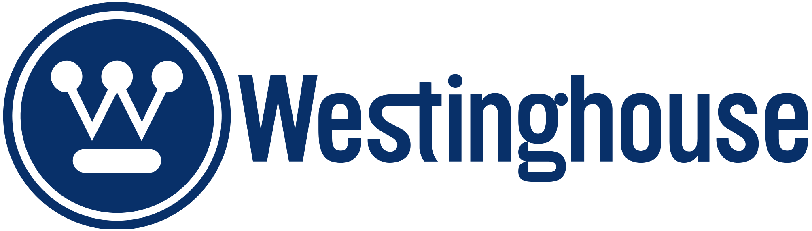

홈 > 브랜드 매거진 > Tokyo 1964
Tokyo 1964
1964년 도쿄 하계올림픽은 제18회 올림피아드로, 1964년 10월 일본 도쿄에서 열렸다. 아시아에서 최초로 개최된 올림픽이자 국제 위성 중계가 이루어진 첫 올림픽으로 기록된다. 일본의 전후 재건과 국제 무대 복귀를 상징하는 행사였으며, 그래픽 디자인 측면에서도 올림픽 역사에 중대한 전환점을 남겼다.
산업 분야 브랜드·비즈니스 · 공개 등급 편집 검수 · 브랜드 평가 4 ★

한눈에 보는 브랜드
1964년 도쿄 하계올림픽은 제18회 올림피아드로, 1964년 10월 일본 도쿄에서 열렸다. 아시아에서 최초로 개최된 올림픽이자 국제 위성 중계가 이루어진 첫 올림픽으로 기록된다.
일본의 전후 재건과 국제 무대 복귀를 상징하는 행사였으며, 그래픽 디자인 측면에서도 올림픽 역사에 중대한 전환점을 남겼다.
브랜드 관점
1964 도쿄 하계올림픽 비주얼 아이덴티티는 전후 일본이 모더니즘 디자인을 국가 차원에서 통합 운용한 첫 사례로 평가된다. 디자인 비평가 가쓰미 마사루가 이끄는 10인 규모 디자인 위원회가 엠블럼·포스터·픽토그램·서식을 하나의 시각 언어로 묶었고, 가메쿠라 유사쿠의 모더니즘 조형이 그 중심을 잡았다.
일장의 붉은 원 아래 황금 오륜을 배치한 엠블럼은 바우하우스·러시아 구성주의의 기능주의와 일본 전통의 절제미를 결합해, 국기 도상을 국제 행사의 상징으로 전환했다. 특히 언어 장벽을 넘기 위해 처음 도입된 픽토그램 시스템과 디자인 가이드 기반의 일관된 적용은 이후 올림픽 아이덴티티 운영의 표준이 되었다.
사진을 포스터에 본격 도입한 점도 그래픽 디자인사에서 분기점으로 꼽힌다.
시작과 성장
엠블럼과 포스터를 맡은 가메쿠라 유사쿠는 1915년 니가타현 출생으로, 1930년대 가와키타 렌시치로가 세운 신건축공예학원에서 바우하우스 이념을 접했고 다국어 문화지 ‘NIPPON’ 편집을 거치며 모더니즘에 심취했다. 카상드르와 러시아 구성주의의 영향을 받아 색·빛·기하·사진을 활용한 극도로 절제된 조형을 구축했다.
1959년 닛폰 디자인 센터 설립을 주도하며 아사히맥주·도요타·도시바 등 대기업을 후원으로 묶었다. 올림픽 엠블럼은 여섯 명의 초청 디자이너 경쟁 방식으로 진행됐는데, 가메쿠라는 마감을 잊고 있다가 불과 몇 시간 만에 안을 완성했고 만장일치로 채택됐다고 전해진다.
디자인 위원회는 가쓰미 마사루가 통솔했고, 픽토그램 작업은 야마시타 요시로가 주도했다.
브랜드 아이덴티티
대회의 핵심 엠블럼은 그래픽 디자이너 가메쿠라 유사쿠(Yusaku Kamekura)가 디자인했으며 1961년 처음 공개되었다. 엠블럼은 일장기를 연상시키는 붉은 원형 태양 디스크를 상단에 두고, 그 아래에 금색으로 통일된 다섯 개의 올림픽 링과 금색 산세리프 글자 'TOKYO 1964'를 배치한 강렬한 모더니즘 구성이다.
시각 시스템 전반은 아트 디렉터 가쓰미 마사루(Masaru Katzumie)가 이끄는 디자인 위원회가 총괄했으며, 야마시타 요시로가 동작을 단순화한 20종의 스포츠 픽토그램을 디자인했다. 이 픽토그램과 안내 표지 체계는 타이포그래피·색상·기호를 일관된 규칙으로 묶은, 올림픽 사상 가장 체계적인 초기 픽토그램 시스템 중 하나로 평가된다.
제품과 서비스
엠블럼(일장 위 황금 오륜)과 네 종의 공식 포스터가 핵심 산출물이다. 포스터는 붉은 원과 오륜을 구성한 첫 작에 이어, 스타트 직후 단거리 주자를 검은 배경에 담은 사진 포스터, 접영 선수, 성화 주자 편으로 이어진다.
야마시타 요시로가 주도한 픽토그램은 20개 종목 기호와 39개 안내 기호로 구성된 59종 체계로, 올림픽 최초의 본격 픽토그램이다. 다색 사진제판으로 인쇄해 당시 일본 인쇄 기술력을 드러냈다.
사람들
현재 상태
도쿄 1964의 엠블럼과 픽토그램 시스템은 이후 개최 도시들이 각자의 픽토그램 체계를 개발하도록 이끌며 올림픽 그래픽 디자인의 국제 표준을 정립한 사례로, 언어 장벽을 넘는 시각 커뮤니케이션의 본보기로 오늘날에도 널리 인용된다.
타임라인
BI/CI 변천사
확인된 BI/CI 이미지가 아직 없습니다.
함께 읽을 브랜드
YO
YO!
브랜드·비즈니스 · 편집 검수YO!YO!는 2016년에 기록된 Designed by Paul Belford Ltd 계열의 브랜드 아이덴티티 사례입니다. Paul Belford Ltd가 아이덴티티 작업...
 브랜드·비즈니스 · 편집 검수Montreal 1976
브랜드·비즈니스 · 편집 검수Montreal 1976몬트리올 1976은 캐나다 디자이너 조르주 휴엘(Georges Huel)이 그래픽·디자인 총괄로 완성한 1976년 몬트리올 하계올림픽(제21회 올림피아드)의 비주얼...
 브랜드·비즈니스 · 편집 검수IBM
브랜드·비즈니스 · 편집 검수IBMIBM는 1957년에 기록된 Historical 계열의 브랜드 아이덴티티 사례입니다. Paul Rand가 아이덴티티 작업의 디자이너로 기록되어 있습니다. 공개 섹션...
IN
INAX
브랜드·비즈니스 · 편집 검수INAXINAX는 1985년에 기록된 Historical 계열의 브랜드 아이덴티티 사례입니다. PAOS가 아이덴티티 작업의 디자이너로 기록되어 있습니다. 공개 섹션 정보는...
 브랜드·비즈니스 · 편집 검수Sapporo 1972
브랜드·비즈니스 · 편집 검수Sapporo 1972Sapporo 1972는 1971년에 기록된 Historical 계열의 브랜드 아이덴티티 사례입니다. Kazumasa Nagai, Katsumi Masaru가 아이덴...
AM
AMI AMI
브랜드·비즈니스 · 편집 검수AMI AMIAMI AMI는 2024년에 기록된 Designed by Wedge 계열의 브랜드 아이덴티티 사례입니다. Wedge가 아이덴티티 작업의 디자이너로 기록되어 있습니다....

브랜드·비즈니스 · 편집 검수WestinghouseWestinghouse는 1961년에 기록된 From the USA 계열의 브랜드 아이덴티티 사례입니다. Paul Rand가 아이덴티티 작업의 디자이너로 기록되어 있...
Me
Mercado Famous
브랜드·비즈니스 · 편집 검수Mercado FamousMercado Famous는 2024년에 기록된 Designed by Gander 계열의 브랜드 아이덴티티 사례입니다. Gander가 아이덴티티 작업의 디자이너로 기...